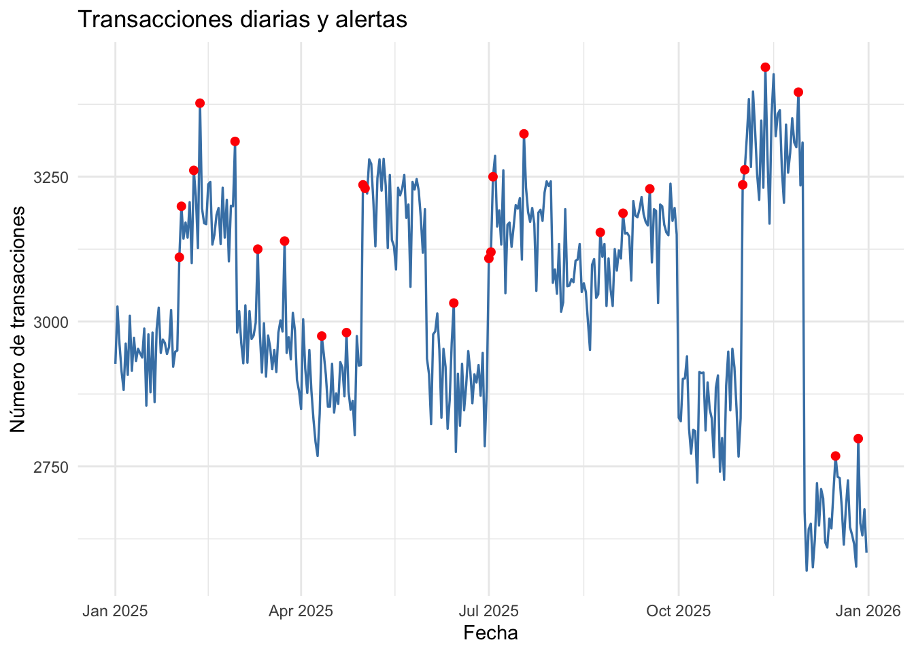
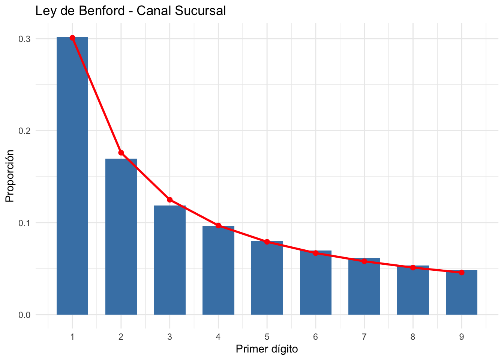

── Conflicts ────────────────────────────────────────── tidyverse_conflicts() ──
✖ dplyr::filter() masks stats::filter()
✖ dplyr::lag() masks stats::lag()
ℹ Use the conflicted package (<http://conflicted.r-lib.org/>) to force all conflicts to become errors
#Ahora leo los parametros personalizadosparametros <-read.csv("config/parametros_tarea3.csv", sep =";")#Obtengo la ventanaventana <- parametros |>filter(parametro =="ventana") |>pull(valor) |>as.numeric()#Obtengo k.alertak.alerta <- parametros |>filter(parametro =="k.alerta") |>pull(valor) |>as.numeric()#Ahora leo las transaccionestx <-read.csv("data/transacciones_2025.csv", sep=";")#Ahora leo los cantonescantones <-read.csv("data/cantones.csv")
#Ejecuto con mis parametrosresultado.ej1 <-alerta.movil(tx, ventana, k.alerta)#RESULTADO_1A: cantidad de días con alertaresultado.1a <-sum(resultado.ej1$alerta, na.rm =TRUE)#RESULTADO_1B: fecha de la primera alertaresultado.1b <- resultado.ej1 |>filter(alerta ==TRUE) |>pull(fecha) |>first()#RESULTADO_1C: alertas con ventana = 7 y k.alerta = 2resultado.1c <-alerta.movil(tx, 7, 2) |>pull(alerta) |>sum(na.rm =TRUE)cat("RESULTADO_1A:", resultado.1a, "\n")
RESULTADO_1A: 25
cat("RESULTADO_1B:", resultado.1b, "\n")
RESULTADO_1B: 2025-02-01
cat("RESULTADO_1C:", resultado.1c, "\n")
RESULTADO_1C: 25
#Grafico del ejercicio 1: transacciones diarias y alertaslibrary(ggplot2)grafico.ej1 <-ggplot(resultado.ej1, aes(x =as.Date(fecha), y = n.tx)) +geom_line(color ="steelblue", linewidth =0.6) +geom_point(data =subset(resultado.ej1, !is.na(alerta) & alerta),color ="red",size =1.8 ) +labs(title ="Transacciones diarias y alertas",x ="Fecha",y ="Número de transacciones" ) +theme_minimal()print(grafico.ej1)

Ejercicio 2: Ley de Benford
#Obtengo el canal desde el archivo de parametroscanal.benford <- parametros$valor[ parametros$parametro=="canal.benford"]#2A: MAD general del canal seleccionadomontos <- tx$monto_crc[tx$canal==canal.benford]resultado.2A <-benford.mad(montos)#2B y 2C: Analisis por cantonresultado.cantones <-benford.canton( tx, canal.benford, cantones)resultado.2B <- resultado.cantones$canton[1]resultado.2C <-sum(resultado.cantones$mad>0.015)#2D: Canton con mayor MAD en Webresultado.web <-benford.canton( tx, "Web", cantones)resultado.2D <- resultado.web$canton[1]# Mostrar las cuatro respuestascat("RESULTADO_2A =", sprintf("%.4f", resultado.2A), "\n")
RESULTADO_2A = 0.0029
cat("RESULTADO_2B =", resultado.2B, "\n")
RESULTADO_2B = Guácimo
cat("RESULTADO_2C =", resultado.2C, "\n")
RESULTADO_2C = 12
cat("RESULTADO_2D =", resultado.2D, "\n")
RESULTADO_2D = Esparza
#Grafico del ejercicio 2library(ggplot2)#Selecciono los montos positivos del canal personalizadodatos_canal <- tx[ tx$canal==canal.benford &!is.na(tx$monto_crc) & tx$monto_crc>0,]#Obtengo el primer dígito de cada montodigitos <-floor( datos_canal$monto_crc/10^floor(log10(datos_canal$monto_crc)))#Calculo las proporciones observadasobservado <-tabulate(digitos, nbins=9)/length(digitos)#Calculo las proporciones teóricas de Benfordteorico <-log10(1+1/(1:9))#Ahora si el graficodatos_grafico <-data.frame(digito=1:9,observado=observado,teorico=teorico)grafico_benford <-ggplot(datos_grafico, aes(x = digito)) +geom_col(aes(y = observado), fill ="steelblue", width =0.65) +geom_line(aes(y = teorico), color ="red", linewidth =1) +geom_point(aes(y = teorico), color ="red", size =2) +scale_x_continuous(breaks =1:9) +labs(title =paste("Ley de Benford - Canal", canal.benford),x ="Primer dígito",y ="Proporción" ) +theme_minimal()print(grafico_benford)

Interpretación del gráfico: Los cantones con mayor MAD presentan relativamente pocas transacciones, como Guácimo con 195, por lo que la desviación podría deberse al tamaño reducido de la muestra y no necesariamente a fraude
Ejercicio 3: Valor acumulado e intereses
#Obtengo la tasa anual de los parámetrostasa.anual <-as.numeric( parametros$valor[parametros$parametro=="tasa.anual"])#Obtengo el canal seleccionadocanal.interes <- parametros$valor[ parametros$parametro=="canal.interes"]#Ejecuto la función con mis parámetrosresultado.ej3 <-valor.acumulado(tx, tasa.anual, canal.interes)#3A: Valor acumulado con mis parámetrosresultado.3A <- resultado.ej3$va#3B: Intereses generados con mis parámetrosresultado.3B <- resultado.ej3$interes#3C: Valor acumulado para App con tasa anual del 6 %resultado.3C <-valor.acumulado(tx, 0.06, "App")$va#Muestro las tres respuestascat("RESULTADO_3A:", resultado.3A, "\n")
RESULTADO_3A: 14262472633
cat("RESULTADO_3B:", resultado.3B, "\n")
RESULTADO_3B: 378064733
cat("RESULTADO_3C:", resultado.3C, "\n")
RESULTADO_3C: 14262472633
#Grafico del Ejercicio 3#Calculo el valor acumulado de cada depósito mensualdatos.grafico3 <- resultado.ej3$tabla |> dplyr::mutate(monto.acumulado=monto*factor )#Organizo los datos para el gráficodatos.grafico3 <- datos.grafico3 |> tidyr::pivot_longer(cols=c(monto, monto.acumulado),names_to="tipo",values_to="valor" )#Creo el gráficografico.ej3 <-ggplot( datos.grafico3,aes(x =factor(mes), y = valor, fill = tipo)) +geom_col(position ="dodge") +scale_fill_manual(values =c("monto"="steelblue","monto.acumulado"="darkorange" ),labels =c("monto"="Monto depositado","monto.acumulado"="Valor acumulado" ) ) +labs(title =paste("Valor acumulado por mes - Canal", canal.interes),x ="Mes",y ="Monto en colones",fill ="Concepto" ) +theme_minimal()print(grafico.ej3)